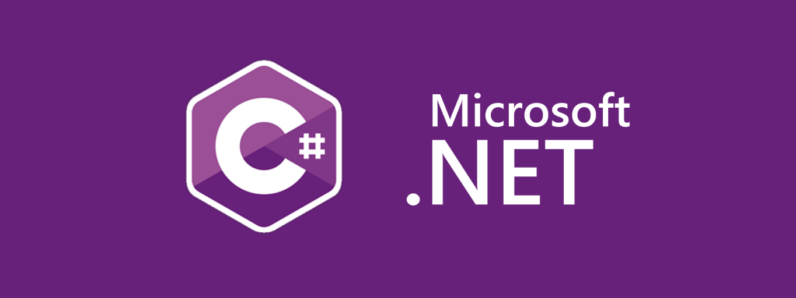

POO How To
POO How To (Programación orientada a objetos how to) te indica cómo podemos establecer las primcipales relaciones que ya conocemos de Bases de Datos en programación orientada a objetos con C#


POO How To (Programación orientada a objetos how to) te indica cómo podemos establecer las primcipales relaciones que ya conocemos de Bases de Datos en programación orientada a objetos con C#
